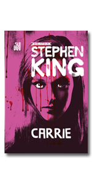

Carrie: Coleção Biblioteca Stephen King Capa dura
R$56,49
1x R$ 56,49
Livro - Carrie, a estranha
Carrie é uma adolescente tímida e solitária. Aos 16 anos, é completamente dominada pela mãe, uma fanática religiosa que reprime todas as vontades e descobertas normais aos jovens de sua idade. Para Carrie, tudo é pecado. Viver é enfrentar todo dia o terrível peso da culpa. Para os colegas de escola, e até para os professores, Carrie é uma garota estranha, incapaz de conviver com os outros. Cada vez mais isolada, ela sofre com o sarcasmo e o deboche dos colegas. No entanto, há um segredo por trás de sua aparência frágil: Carrie tem poderes sobrenaturais, é capaz de mover objetos com a mente. No dia de sua formatura, Carrie é surpreendida pelo convite de Tommy para a festa - algo que lhe dá a chance de se enxergar de outra forma pela primeira vez. O ato de crueldade que acontece naquele salão, porém, dá início a uma reviravolta cheia de terror e destruição. Chegou a hora do acerto de contas. Carrie, a estranha é um dos maiores clássicos de terror da literatura contemporânea e um dos livros mais aclamados de Stephen King.